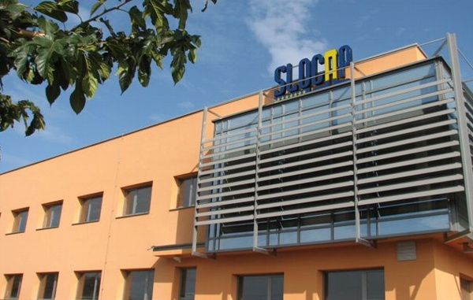
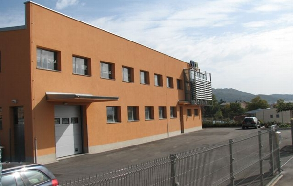

|
Willkommen!
Sie befinden sich auf unserer Website, auf der Sie eine Menge Infos in Bezug auf unser Unternehmen finden können. Auf der Seite mit den Produkten können Sie überprüfen, was alles wir bieten und auf der Seite Unternehmen ist eine kürze Geschichte unseres Unternehmens zu finden. Auf der Karte können Sie genau sehen, wo wir uns befinden. Über eine interaktive Karte können Sie auch den Weg zu uns aufsuchen. Wir wünschen Ihnen eine angenehme Zeit beim Browsen dieser Website und eine gute Zusammenarbeit in der Zukunft.  Anfang des Unternehmens Slocap GmbH stammt aus dem Jahr 1992, wo wir auf den ersten Standort in Sežana mit der Produktion von PVC-Kappen begonnen haben. Von Jahr zu Jahr hat sich die Firma entwickelt, sie erweiterte ihre Produktion und Markt. In 2007 hat Slocap das Unternehmen verlegt in neue Produktionsanlagen am neuen Standort in Sežana. Dabei hat die Firma auch ihr Angebot an der Herstellung von Polylaminat Kappen für Schaumweine Flaschen, Alu-und PVC-Abdeckungen für Inox und Glasfässchen erweitert. Die wichtigsten Grundsätze der Unternehmen waren schon immer Sicherstellung der Qualität der Ware, die Flexibilität an den Endverbraucher - der Käufer, minimale Lieferzeiten, potenzielle Produktion von kleinen Mengen, Beratung von Kunden bei der Bestellung von Produkten. Um eine hohe Qualität unserer Produkte zu versichern verwendet das Unternehmen nur Materialien anerkannten globalen Produzenten. Käufer von Produkten Slocap kann man in ganz Europa und in den Ländern des ehemaligen Jugoslawien finden.


PVC-Kappen
Typ: Standard (1) und flache Kopf (2) Dimension Durchmesser d: 25mm - 36mm, Länge h: 30 mm - 70 mm ohne Abwickelbändchen, mit dem vertikalen Abwickelbändchen mit dem horizontalen Abwickelbändchen Perforation Farben: Körper in zwei Farben + 1 x warmen Druck Deckelfarben: in zwei Farben + Relief - Logo 
Polylaminatkappen für Schaumweinflaschen
Material: Polylaminat 62 um (andere Dicken auf Anfrage) Abmessungen: 34mm Länge 75mm Kopf-140mm Konus: 1/7, 1/8 ohne Abwickelbändchen mit Abwickelbändchen mit Abwickelbändchen und 1 x Perforation unter dem Bändchen Doppel-Perforation ohne Bändchen Fensterchen Rhombusrelief auf dem Material Erweiterte Runde Kragen auf einer Seite. Farbe des Körpers: in zwei Farben + 2 x warmen Druck Deckelfarben: in zwei Farben + 1 x warmen Druck
Alukappen für Fäßchen
Material: Aluminium Maße: Durchmesser 45, 60, 63, 78mm Farben: ein Farbe + Druck Material: PVC Abmessungen: 63mm Farben: eine Farbe
Slocap d.o.o. Sežana
Cesta na Lenivec 30 D 6210 Sežana, Slovenija Tel.: +386(0)5 730 48 90 Fax.: +386(0)5 730 48 91 E-mail: info@slocap.si |
|